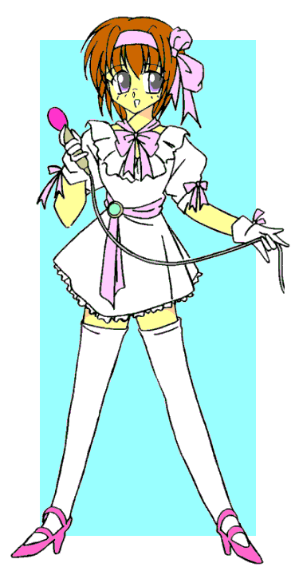
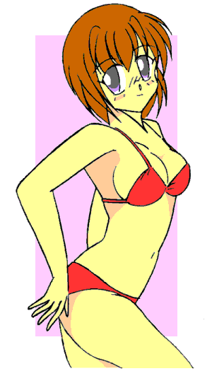

戻る
俺の名前は藤丸和也。１７歳の高校二年生、藤丸家の一人息子だ。藤丸家はじっちゃんまでは代々忍者の家系だったらしいけれど、親父はごく普通のサラリーマンをしている。
ところがお盆休みのある日、突然田舎からやってきたじっちゃんが、俺に藤丸家に代々伝わるという奥義を伝授してくれた。それは写真に撮った人物の姿に変身できるというもので、俺は早速隣りに住んでいる幼馴染の風野麻美に変身すると、麻美としての生活を楽しんでしまった。麻美にそのことがばれて彼女はかんかんだったけれど、新しくクラスメイトの田端千秋、栗山秀美、池山明子の３人、そしてアイドルの近藤詩織ちゃんの陰画をゲットすることができたんだ。
さて、この奥義何に使おうか。
奥義２
作：ｔｏｓｈｉ９
−１−
翌日の朝、俺は家の前で麻美とばったり出くわした。
「あ、麻美……昨日は悪かった、な」
「…………………」
麻美は俺を無視して、プイっと行ってしまった。そりゃあ麻美にとってはショックだったかもしれない。家に帰ってみると自分がもう一人いて、しかもそれが実は俺だったんだから。彼女に成りすまして数日間生活していたなんて知ったらもっとショックかもしれないけれど、さすがにそこまでは話せなかった。
さて、どうしようか… … … ……って、ええい、考えてもしょうがない。
麻美のことは取り敢えずなるようになれだ。とにかく今日はテレビ局に行ってみなくっちゃな。
そう、そしてテレビ局に着いたら昨日ゲットした詩織ちゃんの陰画を使って詩織ちゃんに成りすます。そしてまた別のアイドルの陰画をゲットするんだ。今のところ変身して外に出かけたのは麻美の姿だけだけれど、誰にも見破られなかったし今日も上手くいくさ。
数日間麻美になって暮らし、彼女の両親にさえもばれなかったことで、俺は他人に成りすますことに結構自信を持ち始めていた。
えへへへ、俺ってじっちゃんが言ってたように才能があるのかな。昨日の調子で今日も上手く陰画をゲットしなくちゃな。
俺は電車の中で陰画をどうやって手に入れるか思い巡らし、いろんなアイドルに変身する自分を想像しながら、一人にやついていた。
さて、ＪＲと地下鉄を乗り継いでテレビ局の前まで行ってみたものの、中に入ろうとした途端、守衛さんに止められてしまった。
「きみきみ、ここは関係者でないと入れないよ。見学だったらあっちの入り口から入るんだ」
「そうなんですか、玄関からは関係者だけ……じゃあ芸能人のひとってここから出入りしているんですか？」
「うーん、そんなところだ。さあ、いつまでも立っていないで行った行った」
俺は仕方なくその場を離れた。さて、どうする？
あたりを見回してみると、丁度玄関の脇にワゴンが止まっていた。俺はあたりに誰もいないことを確かめると、その陰に回り込んだ。
さあ……奥義、いくぜ。
俺はセカンドバッグから詩織ちゃんの写真を取り出すと、それを地面に置いた。昨日、変身を解いた後で再びデジカメからプリントアウトしておいた分だ。
両手で印を結びながら、写真に精神を集中する。集中が段々高まっていくに従って体の感覚が研ぎ澄まされてくる。そして俺の体は徐々に縮み始めていた。すっかり小人サイズにまで小さくなると、俺は写真に向かって飛び込んだ。俺の体は写真にぶつかることなく、シュルンと写真の中に入ってしまっていた。
写真の中に入った瞬間に、すでに詩織ちゃんの格好になっているのを肌で感じる。
気合を入れて写真から飛び出すと、まだ小さなままだが、十字に組んだ腕をゆっくりと内から外側に回すと俺の体は元の詩織ちゃんの大きさに戻っていった。
「さあて、上手くいったかな？」
俺は体を見下ろして自分の格好を確認してみた。今の俺は半袖、膝丈のひらひらしたワンピースを身に纏っていた。肩からはかわいいポシェットを下げている。自分の両手を見詰めると細くて長い白い指がそこにはあった。爪はきれいに切りそろえられ、透明のマニキュアが塗られている。頬を触ると少しひんやりとした自分の手のひらの感覚が心地よい。目の前にあるワゴンのサイドミラーに写った自分の姿を確かめると、そこには昨日ホテルで見たまんまのショートカットの詩織ちゃんがうれしそうに立っていた。
「よし、成功だ。詩織ちゃん、しばらく君をやらせてもらうぜ」
俺はデジカメをポシェットに入れるとセカンドバッグを垣根の中に隠し、もう一度テレビ局に入ろうとした。勿論堂々と正面玄関からだ。
「おはようございま〜す」
俺は、さっき俺を追い返した守衛さんに明るく声をかけてみた。
「あ、詩織ちゃん、おはよう。今日はお一人なの？」
「ええ、詩織、マネージャーさんとの約束の時間間違えちゃったみたいで、一人でここに来ることになっちゃったの」
さっきの守衛さんは、すっかり俺を詩織ちゃんだと思い込んでいる。
「そりゃあ大変だね。今日もがんばるんだよ」
「はい、ありがとうございま〜す」
目じりがすっかり下がっているな……俺だとも知らないで。
内心ではにやりと笑いながらも、俺は詩織ちゃんの顔でにこっと微笑み、守衛さんに会釈すると、テレビ局の中に入っていった。
「さーて、と、どこに行ってみようかな？」
勢いで来てはみたものの、テレビ局に入るのなんて初めてだ。どこに何があるなんて勿論俺は知らない。廊下をぶらぶらと歩いていると何人かテレビ局のスタッフらしき人から声をかけられた。
「おはようございます」
「あ、おはようございまーす」
「詩織ちゃん、今日も元気そうだね」
「えへへ、ありがとうございまーす」
そんなやり取りを繰り返しながらうろうろしていると、第５スタジオと書かれている部屋の前で突き当たってしまった。
「おっと、行き止まりか」
仕方ないので引き返そうとすると、突然後ろから呼び止められてしまった。
「あれ？ 詩織ちゃんじゃないか。君のマネージャー、昨日から探していたみたいだったけれど何かあったの？ でも丁度良かった。こちらもそろそろリハーサル始まるから準備してよ」
「え……ええー？」
「さあ、入った入った」
俺は有無を言わせず目の前の第５スタジオの中に引っ張り込まれてしまった。リハーサル？ はて何をするんだ？
「おっはよー詩織ちゃん、今日はどうしたの？ なかなか来ないし心配したよ」
お、西野さやかじゃないか。
「うん、ちょっとあってね」
「そっか、詩織ちゃんは一人暮らしだもんね、いつも大変だね」
「へへ、今日は特別だよ」
さやかちゃんとこうして普通に話せるなんて感激だぁ！ 彼女、詩織ちゃんと仲が良いんだな。
「じゃあ始めまーす。バンドの方ＯＫですか！？」
俺を引っ張り込んだ男が、スタジオ内にいたバンドに呼びかける。んーと、何を始めるんだ？
「じゃあ詩織ちゃん、がんばろうね」
「うん（はて、何が始まるんだ？？）」
「じゃあ、さやかちゃん良いですかぁ」
「はーい」
さやかちゃんが男に呼ばれてステージに出ると、バンドが演奏を始めた。
ゲゲッ！ これって歌番組の収録か！？ 俺、歌なんて歌えないぞ。
やがてさやかちゃんは自分の歌を歌い終えた。さやかちゃんの歌声が生で聞けるなんて、詩織ちゃんになってここまで来てみて良かったな。それにしてもリハーサルって普段着でやるもんなんだな。っと、それよりも、うーん……どうしよう？
「じゃあ詩織ちゃん、行くよ。あそこのハミまで行ったら演奏始まるからね、じゃあ頼むよ」
「はいマイク。詩織ちゃん、がんばってね」
さやかちゃんがにっこりと笑って俺にマイクを渡す。
こ、困った。頭の中が混乱しまくりながらも、回りのスタッフに促されて俺はさやかちゃんがさっきまで歌っていたテープの貼ってある場所に進み出た。
バンドが演奏を始める。
ええい、何とかなるさ……俺はマイクを握り締めて歌い始めた。
「＃＠♂℃・・☆☆〒♪√♪♭・・・」
・・・・・・・・・・・・・・
「よし、どうやら終わったかな」
バンドが演奏を止めた。どうやら終わったようだ。歌い終えてほっとした俺は回りを見回した。
皆ぽかーんとした表情で俺を見詰めている。その中のディレクターらしき人が駆け寄ってきた。
「詩織ちゃん、おかしいと思ったら今日は調子悪かったんだね。少し休みとっていいよ。おーいリハ一旦中止するぞ」
「ええ？ 私、別に普通ですよ」
「うんうん、詩織ちゃんが責任感の強いのはよ〜くわかったから、今日の本番は口パクでやろうね」
「は、はぁ」
俺の歌ってそんなにひどかったのか？
「詩織ちゃん、風邪だったの？ 医務室に一緒に行ってあげようか？」
「さやかちゃん……そんなにひどかった？」
「……うん」
さやかちゃんが申し訳なさそうに頷く。
……お、俺って音痴だったのかぁ！？
その後、俺はさやかちゃんに付き添われて医務室に行った。どっこも悪くないんだけれど、結局風邪薬を飲まされる羽目になった。うげー、苦いよ。
「ここのお薬ってよく効くのよ」
「うん、ありがとう。ところでさやかちゃん」
「ん？ 何、詩織ちゃん」
「ちょっと写真撮らせてくれない？」
「ええ？ こんなところで？ 変な詩織ちゃん」
俺はポシェットからデジカメを取り出すと、さやかちゃんに向かってシャッターを切った。
カシャカシャッ
怪訝な表情を見せながらも、さやかちゃんは写真を撮らせてくれた。へへっ、さやかちゃんの陰画ゲットだぜ。
「じゃあ詩織ちゃん、行こうか？」
「うん。あ、先にお手洗いに寄ってかない？」
「え、うん、いいよ。じゃあ一緒に行こっか」
俺たちは女子トイレに行くと、二人して中に入った。
うーんいいんだろうか……いいよな。だって俺って今詩織ちゃんなんだし。
隣の個室にさやかちゃんが入る。続いて俺もその隣へ入る。
隣からはガサガサと衣擦れの音が聞こえてくる。
ああ、今さやかちゃんが隣でショーツを脱いでいるんだ。
続いてジャーっという水を流す音。
お！ これが音消しってやつか。うーん残念（俺って変態かぃ）
さてと、俺も済ませなくちゃな。
俺はスカートの裾に両手を差し入れると、自分が穿いているショーツをするすると下ろした。麻美になった時に経験しているから戸惑いはないものの、詩織ちゃんとして用を足すのは初めてだ。何か興奮するなぁ。
俺は便座に腰を降ろすと股を広げて力を抜いた。股の間に目をやると、そこには慣れ親しんだものは無かった。そこにあるのは詩織ちゃんの……。やがて広げた足の間からチョロチョロと小水が出てくる。
ああ、これって詩織ちゃんのなのか。
用を足しながら俺は興奮していた。だが、その時隣でドアが開く音がした。さやかちゃん終わっちゃったんだ。うーん仕方ない、行くか。
俺はカラカラをトイレットペーパーを引き出すと、股間を拭いてショーツを元通りに穿きなおした。
ドアを開けると、鏡に向かってさやかちゃんがメイクを直していた。
「詩織ちゃん遅かったね。やっぱり調子悪いの？」
「ううん、大丈夫。さ、行こっか」
トイレから出てスタジオに戻ってみると、突然声を掛けられた。
「詩織ちゃん、何処行ってたの。連絡もしないで突然いなくなるから心配したのよ。まあ話は後で聞くとして、早く衣装に着替えましょう」
「え？ は、はい」
それはグレーのタイトスカートのスーツ姿のお姉さんだった。もしかしてこれが詩織ちゃんのマネージャーさんなのかな？ ２０代後半ってところかな？ きれいな人だ。
「あ、じゃあまたね詩織ちゃん」
「うん、ありがとう、さやかちゃん」
俺はその女性に引っ張られるようにして、控え室と書かれている部屋に連れていかれた。どうも詩織ちゃんは昨日から音信不通だったらしい。うーん、妙なことになってきたな。
そういえばあの時、詩織ちゃんってあそこで誰かを待っているみたいだったよな。
俺は昨日ホテルで見た詩織ちゃんの様子を思い出していた。
「さあ、早く早く」
有無を言わせずに、俺は着ている服を脱がされてしまった。
「衣装さん、時間ないから早くお願いね」
控え室内にいたスタイリストとおぼしき女性が、俺に次々と新しい服を着せていく。白のハイソックス、アンダースコート（だよな）、ブラジャーもつけていたものとは別のに換えさせられ、最後にフリルをふんだんにあしらった白基調のミニワンピースに着替えさせられた。
お、これっていつも詩織ちゃんが歌うときに着ている服だ。ステージ衣装ってやつか。
メイクを施され、髪をブラッシングされると、鏡の中にはさっきまでの普段着の詩織ちゃんとはまた違う、テレビでいつも見るアイドルの詩織ちゃんがいた。
「さあ、行きましょう」
廊下をマネージャーのお姉さんと一緒に駆けていく。でも靴は走り難いし、ひらひらと舞うスカートの裾が気になって思うように走ることができなかった。何でこんなにひらひらと……これって見えてるんじゃないのか。
再び第５スタジオに戻ると、待ちかねたようにディレクターさんらしき人の声が響いた。
「よし、大丈夫かな？ ……じゃあ、本番いくよ！」
歌番組の収録が始まった。
司会者のトークが終わり、続いてゲスト出演の歌手が順番に歌っていく。
……今さやかちゃんが歌っている。次は俺の——詩織ちゃんの出番だ。うーん緊張するな。
目線を落とすと、椅子に座っている俺の目の前には自分の着ているミニスカートからまぶしいくらいに白い脚が伸びている。
これって詩織ちゃんの脚——でも俺の脚なんだな。
脚を組むわけにもいかないので両手を太股の上に置いてじっと待っていると、自分の脚がぶるぶると震えているのがわかった。
何でこんなことになっちゃったんだ……
「はい、では続いて近藤詩織ちゃんです。曲は勿論大ヒット中の、『ＴＳアイラブユー』！！」
司会の声がスタジオ内に響き渡る。
歌い終えて戻ってきたさやかちゃんが小声で「がんばって」と声をかけてくれた。
よーし、どうせ口パクだ。振りは大丈夫みたいだったし、やるだけやるさ。
俺はマイクを持って立ち上がるとハミの所まで歩いていった。ライトの光がやけに熱い。マイクを口元にあてて歌い始める。スピーカーから俺の声は出ない。

よーし、これなら。
俺は安心して振りをこなすことに専念した。
激しくはないけれど手振りの多い『ＴＳアイラブユー』の振りつけ。
少しローアングル気味に構えているカメラにスカートの中身が映っているんじゃないかと気になったけれども、俺は曲の振りを間違えることなくこなしていった。
だって、テレビでいつも見ているからねっ。
曲が終わって最後の決めのポーズを取ると、スタジオにいた出演者やスタッフから拍手が上がった。
……そっか、俺って今、体調が悪いって思われているんだ。
席に戻るとさやかちゃんが、「大丈夫？ よくがんばったね、詩織ちゃん」って言って、俺の手を握ってくれた。
「うん、大丈夫。心配かけてごめんね」
「ふふっ、よかった」
収録が終わるとマネージャーのお姉さんが近づいてきた。うーん、そろそろここから逃げ出したいな……
「詩織ちゃん、ご苦労様。これでおしまいって言いたいんだけれど、今日はもう一つ仕事があるの。それが終わったら家まで送ってあげるから、もう少しだけがんばってね」
「え？ 何のお仕事ですか」
「この間話したグラビア撮影、水着のね」
「そうですか、水着グラビア……水着……グラビア……ええぇ〜！？」
俺の一日はまだ終わらない。
−２−
ステージ衣装から普段着の半袖ワンピースに着替えさせられた俺は、メイクも落とさず、急かされるようにマネージャーのお姉さんと一緒にタクシーに乗り込んだ。
「ごめんね急がせて。あんまり時間がないの。でも詩織ちゃん、体調は大丈夫？ みんなが心配していたみたいだけれど」
「え？ は、はい、大丈夫……です」
別れ際に「詩織ちゃん、がんばってね」と両手を握って応援してくれたさやかちゃんの笑顔を思い出しながら、俺はマネージャーさんに答えた。
それにしても、水着撮影なんてなあ……
俺が女の子の水着を着て写真を撮られるんだよな。カメラの前で水着姿でポーズ取ったり……そんな恥ずかしいこと、俺にできるのか。
「なあに変な言葉使いしちゃって。でも良かった。もしかしたらあなた今日の仕事をすっぽかすんじゃないかって心配していたのよ」
「え？」
「詩織ちゃん、拓海くんと別れるのはいやだって昨日あんなに駄々こねていたものね。でもちゃんと収録に来てくれて安心したわ。やっぱり詩織ちゃんもプロね」
「は、はあ」
そうか、詩織ちゃんっていなくなっちゃったんだ。そう言えばあの時ホテルのロビーで誰かと待ち合わせしていたみたいだったけれど…………拓海？ 拓海って男性アイドルグループの藤崎拓海か。
そ、そうだったのか？！
詩織ちゃんって藤崎拓海と付き合っていたんだ。まさか二人で駆け落ち？ いやまさかな。
でも詩織ちゃんが来ない代わりに俺が現れたもんで、タイミング良くすりかわったって訳だ。それにしてもこのままずっとというのも困るよなあ。う〜ん、どうする？
「ほら、着いたわよ。降りて」
いろいろと頭の中で思い巡らしているうちに、街中を走るタクシーは写真スタジオらしき建物の前に止まった。入り口には『篠田フォトスタジオ』というネームプレートが掛けられている。
篠田？ 篠田って、まさかあの篠田貴信？
篠田貴信、少年雑誌から週刊誌までアイドルの水着や女優のヌードのグラビアで有名な写真家だ。俺も随分グラビア雑誌のお世話になっているけど、だけど、この俺が撮られるのかよ〜。
「ほら、どうしたの？」
マネージャーさんに再び促されて、俺は仕方なくタクシーから降りた。
「詩織ちゃん、撮影が終わったらゆっくりお休みしましょう。でも篠田先生、今日は大丈夫だろうな」
ちょっと小首をかしげるマネージャーのお姉さん。
「ええっ？ どういうこと……なの？」
「今日は水着だけですよって念を押してるんだけれど、あの先生ノッてくると何を言い出すかわからないから」
「何を言い出すかって？」
「今まで何人もの女の子が撮っているうちに全部脱がされたって噂があるし」
「脱がされて？ 脱がされてって……それって」
「水着撮影がヌード撮影になったってこと」
「え゛」
「ふふっ、でも大丈夫。このあたしがいるんだから、詩織ちゃんのヌード写真なんか絶対撮らせないわ。安心して」
「お、お、お願いします」
「詩織ちゃん、あなた今日ほんとに変ね」
「そ、そおか、な？」
「じゃあ早く行きましょう、篠田先生もうお待ちかねだと思うから」
後続のタクシーで到着したスタイリストさんたちと一緒にスタジオに入った俺たちをサングラスをかけた髭面のおっさんが出迎えた。
これが篠田貴信か。
「やあ詩織ちゃん、久しぶりだね」
「はい、篠田先生、お久しぶりです」
詩織ちゃんになりきって、俺は丁寧にお辞儀をした。
「先生、詩織ちゃん今日はあまり体調が良くないんです。だから手早くお願いしますね」
「俺はやっつけ仕事はしないぞ。少々体調が悪かろうが、納得した絵が撮れるまで詩織ちゃんにはがんばってもらうからね。でも大丈夫、詩織ちゃんテレビで見ているより顔色が良いよ」
「え？ そ、そうですか？」
「うーん、何と言うかな、むしろ内側から精気が溢れている感じがするな。それも男の子的な元気良さみたいなものを感じるな」
げっ！
「うん、わいてくるわいてくる。おお、どうやらいい写真が撮れそうだ。さあ早速始めようか」
「全く篠田先生ったら……。それじゃあ詩織ちゃんがんばってね。利根山さん、詩織ちゃんの水着とメイクをお願い」
スタイリストさんの一人がこくりと頷いて、俺を別部屋に引っ張っていく。
水着撮影ってワンピース？ ビキニ？ それともまさか……すっぽんぽん、うわぁ〜。
あたふたと利根山さんに手を引っ張られて更衣室に駆け込む俺の頭の中を、カメラを向けられた水着姿の詩織ちゃんや、恥ずかしそうに水着を脱ごうとしている詩織ちゃんの姿がぐるぐると駆け巡っていた。
でもこれから撮られる詩織ちゃんって、この俺なんだ……
「ほら詩織ちゃん、しっかりして。早くこれに着替えて頂戴」
呼びかけられて俺ははっとした。
そう、気が付くと鏡の前に座らされてメイクの修正が終わっていた。
我に返った俺に利根山さんが手渡したのは白い滑らかな布切れ。
広げてみると、それは小さなアンダーショーツと真っ白なワンピース水着だった。
ほっ、これならプールで着たのとあんまり変わらない。でもこれを着て篠田貴信にカメラを向けられるなんて。
目の前の鏡に映った詩織ちゃんの顔がぽっと赤くなる。
「ほら、急いで」と、利根山さんは立ち上がった俺をフィッテングルームに押し込めた。
さすがに水着はこの中で着替えるらしい。
そして中に入るや否や、利根山さんは俺の着ている半袖ワンピースの背中のファスナーをサっと下ろした。
「ちょ、ちょっと待って」
「何恥ずかしがっているの？ 詩織ちゃん。お仕事でしょう」
「あ、あの、後は一人で着替えるから」
「そお、じゃあとにかく急いでね、水着はそれ一着じゃないんだから」
そう言いながら利根山さんはカーテンを閉めた。
げげっ、他にもまだあるのか。
全く何でこんなこと。でもこれじゃ今更逃げるに逃げられないしなあ。
……仕方ない、とにかくなるようになれだな。
既にファスナーが下ろされた半袖のワンピースから、体を抜き出すように脱いでいく。
フィッティングルームの鏡にスリップ姿の詩織ちゃんが映っていた。
し、詩織ちゃん、俺これ以上脱いでもいいのかな……いいよな、これって俺の体なんだし。
スリップの肩紐を肩から外すと、スリップがファサリと床に落ちる。ブラジャーのホックを外して胸からそっと外す。すると桜色のぽっちりが顔を覗かせた。
ううう……かわいい。
俺はどきどきと興奮しながら穿いているショーツに手をかける。
顔を上げると、ショーツ一枚になって少し屈んだ詩織ちゃんが恥ずかしそうにこっちを向いていた。
い、いくぞ……
思い切ってショーツを両手で下ろす。
恐る恐る顔を上げると、鏡の中に裸になった詩織ちゃんがいた。
顔、胸、腰、そして股間の……。
ぐはぁ！
その瞬間凄まじい衝撃が俺の脳天を直撃した。
き、きれいだ……
テニスで鍛えられた、日焼けして締まった麻美の体も良かったけれど、詩織ちゃんの体は肌が透き通るように白くてきめ細かくって、柔らかくって、そして胸がでかかった。
うーん、詩織ちゃんって着痩せするタイプだったんだな。
そういえば詩織ちゃんの水着グラビアって今まであったっけな。
まさかこの撮影が最初なんてことは……いや、もしかしたらそうなのかも。
ってことは、詩織ちゃんってこの撮影が嫌だったんじゃあ……。
ふと、そんな疑念が俺の頭の中をよぎった。
「詩織ちゃん、どうしたの」
おっと利根山さんが呼んでる。急がなきゃな。
俺はまずアンダーショーツに自分のすらりとした脚を通し、そしてするすると引き上げていった。
すっきりとした股間をナイロン地の小さなショーツがぴったりと覆い隠す。
そして足元に置いた白い水着を両手で広げた。
これを俺が着るのか、いや、詩織ちゃんがか。
広げた水着に自分のすらりとした脚をその中に通し、そしてするすると引き上げていった。
滑らかな水着の生地が俺の腹に、胸に、そしてショーツを穿いた股間にぴったりと密着する。
何だか気持ちいい。肌触りも昨日のレンタル水着と違う。
よしっ、詩織ちゃん、君の水着撮影やらしてもらうぜ。
…………って言ってもなぁ。はぁ〜。
鏡に映った白い水着姿の詩織ちゃんが、肩を落としてため息をついていた。
シャっとカーテンを開くと、利根山さんが腕を組んで待っている。
「着替えましたけど」
「詩織ちゃん、もっとちゃんと着付けなきゃ駄目よ、ちゃんと整えて、ほら、こことかこことか」
利根山さんがあちこちの生地を手で引っ張る。胸の周り、そしてお尻、背中。
「あ、ありがとうございます」
「さあこれで良いわ、じゃあ行きましょう。この水着で撮り終わったら、またここに戻ってきてすぐに着替えるのよ」
「はあ」
「ほら、これ履いて」
利根山さんがかわいいビーチサンダルを揃えて俺の足元に置く。
踏み出した俺の足にサンダルはすっと密着した。
ぴったりだよ。
「さあ、行きましょう」
利根山さんに手を引っ張られて、俺はスタジオに飛び込んだ。
「お待たせしました。詩織ちゃん準備できました」
「おお、いつまで待たせるんだ。待ちくたびれたぞ」
だがそう言いながらも、サングラスを外した篠田先生の目は笑っていた。
そして俺の頭のてっぺんから足先までじろじろと見つめる。
「よし、いいだろう。じゃあ詩織ちゃん始めるよ。スクリーンの前に立って」
「はい」
スタジオの中には大型のカメラ、デジカメ、固定のカメラといった数台のカメラが準備されている。
俺が言われた通りにスクリーンの前に立つと、篠田先生が据えられた大型のカメラを覗き込んだ。
「ふーむ、そうだなあ」
何となく気難しそうに先生が呟くのを聞いて、少し嫌な予感がした。
「詩織ちゃん、そこで何か好きなポーズを取ってみなさい」
「好きなポース……ですか？」
カメラに向かってポーズなんて取ったこと無いぞ。
戸惑いながらも、ふと思いついて千秋、秀美、明子の３人組を撮った時に彼女たちがやっていたポーズを次々にとってみた。
マネージャーのお姉さんはそんな俺ことを、腕を組みながら壁にもたれかかり、にこにこと見つめていたが……。
「違う違う、そんな取って付けたようなのじゃ駄目だよ」
「え？ 駄目ですか」
「詩織ちゃん、今君は頭の中で考えながらポーズをとっているだろう。それじゃあ駄目なんだ。もっと自然な自分を出しなさい」
「自然な……ですか？」
そんなこと言われたってなあ。
それからいくつかポーズを取ってみたけれど、ファインダーを覗いている篠田先生はどうにも気に入らないようだ。
「うーん、僕の最初のインスピレーションは気のせいだったのかなあ。……そうだ！ 詩織ちゃん、ちょっとファイティングポーズを取ってごらん」
「ファイティングポーズ……ですか？」
「ボクシングや空手の時の構えだよ」
「はあ」
言われた通り両脇を締めて拳を握り締め、両腕をぐっと構えてみた。
「おっ、それそれ。もっとこう、戦う相手が目の前にいると思って」
俺は目の前に対戦相手がいると思いながら睨み付けた。
「よしそれだ、それでいこう。始めるぞ」
慌しく先生の助手が動き始め、ぱっとスクリーンに映る景色が変わった。
そしてカメラを覗き込みながら貴信先生がカシャッ、カシャッっとシャッターを切っていく。
「よし！ 拳を出して、右ストレート」
「はい！」
言われるままにシュっと拳を突き出す。
「いいよいいよ……よし、キックだ！」
「はい！」
前に右脚を蹴り出す。
「そうだ、ほら、腕を前に突き出してみて」
「はい！」
「いいぞ〜、さあこっちみて、笑って、勝利のガッツポーズ」
「はい！」
「うん、いいよ……はい、ＯＫ」
ようやく篠田先生がファインダーから目を離す。
「よおし、良かったよ詩織ちゃん。これでＯＫだ。じゃあ次行こうか」
篠田先生が利根山さんに目配せすると、利根山さんがこくりと頷いて近づいてきた。
「詩織ちゃん、じゃあ次のに着替えましょう」
「あ、やっぱりまだ……」
「さあ、急いで」
またもや背中を押されるようにして更衣室に飛び込んだ俺に、利根山さんが新しい水着を手渡した。
「はい、次はこれよ」
赤い布切れを渡される。ボリュームの少ないそれを恐る恐るぴろりと広げてみると……。
で、出たあ！
それは、極端に布地の少ない真っ赤なビキニだった。
「こ、こ、これ着るんですか」
「ほら詩織ちゃん、急いで。それとも手伝う？」
「い、いえ」
シャっとカーテンを閉めると、受け取ったビキニを握り締めて、もう一度は〜っとため息をついた。
こんなもん、俺が身に付けるのか、こんな色っぽいビキニ……。
いや、俺じゃない、今は詩織ちゃんなんだが、それにしてもなあ。
俺はため息をつきながらも着ていた真っ白なワンピース水着を脱ぐと、その真っ赤なビキニのパンツに脚を通した。
するすると引き上げて下半身にピチっと密着させてみたものの、やっと腰に引っ掛かっているような、今にもずり落ちそうなその感触はどうにも落ち着かない。
ブラジャーに腕を通して、解かれた肩紐を首の後ろで何とか結ぶと、プラスチックのホックをパチっと止めた。
水着の中の大きくて柔らかい胸をたぐり寄せ、そしてパンツからお尻の肉がはみ出していないかチェックする。
うん、大丈夫。で、でも……。
目の前の鏡に映った詩織ちゃん、その色っぽいビキニ姿に思わず頭がくらくらしてくる。今のこの格好に比べたらさっきのワンピース水着なんて全然かわいいもんだ。
は、恥ずかしいよ。
思わずしゃがみ込むと、両腕で胸を隠してしまう。
「詩織ちゃん、どお？」
「はっ！ と……利根山さん、は、恥ずかしい……」
シャっとカーテンが開く。
「何言ってるの、よく似合っているわよ。篠田先生今日はとってもノってらっしゃるからきっと素敵に撮ってくれるわよ」
「はあ」
これを撮られるのか、この姿で俺は。
「ほら、行きましょう」
足が竦んだ俺の手を掴むと、利根山さんはスタジオに引っ張っていった。
そして中に足を踏み込むと同時に篠田さん、篠田さんの助手、マネージャーさん、スタイリストさんの目が一斉にこちらを向き、ビキニ姿の俺をじ〜っと注視する。
恥ずかしい、恥ずかしいよ。
自分の顔がみるみる赤くなっていくのがわかる。
「うん、詩織ちゃん、よく似合っているよ。よ〜し、じゃあいくぞ。さあスクリーンの前に立って」
利根山さんに押し出されるようにしてそこに立った俺に篠田先生がカメラを向けると、ファインダーを覗き込む。
「ほう、これは……ふーむ、そうだな」
カシャッ、カシャッ
ファインダーを覗き込みながら何回かシャッターを切っていた篠田先生は、何かを思いついたように呟くと目を離した。
「すまんが、詩織ちゃんにＴシャツとジーンズを着せてくれ。水着の上からな」
利根山さんが篠田先生に言われた通りにＴシャツとジーンズを持ってくる。
「はい、詩織ちゃん。これ着て」
「はあ」
俺は自分のビキニ姿がレンズに晒されることから解放され、ほっとしながらそれを着込んでいった。
Ｔシャツもジーンズも詩織ちゃんの体にぴったりだ。
「よーし、こっちの鏡を下ろしてくれ」
先生が助手に指示すると、天井から巨大なスクリーン状の鏡が下りてくる。
そこにはＴシャツ、ジーンズ姿の少しほっとした表情の詩織ちゃんが映っていた。
カシャッカシャッっと再びシャッターの音がスタジオに響く。
「よし、いいぞ、じゃあ詩織ちゃん、そこでゆっくりとそれを脱いでくれ。Ｔシャツ、そしてジーンズの順番でな」
「ええ？ ここで……ですか〜？」
「そうだよ、恥ずかしいだろうが、まあ下に水着を着ているんだから大丈夫だろう」
そんな……その水着が問題なんだ。
「さあ始めよう」
にやりと笑いながらファインダーを覗き込む篠田先生。
くううう。
Ｔシャツを捲り上げて脱ぐ。
赤いビキニのブラジャーに包まれた胸がぷるんと揺れた。
その瞬間カシャッカシャとシャッターの音。
俯いた自分の顔が再び赤くなっていくのがわかる。
「うん、いいよいいよ、もっと顔を上げて」
全く篠田先生って何考えているんだ。
ジーンズのボタンに手をかける。
カシャッカシャッっとシャッター音が続く。
ファスナーを下ろしてゆっくりとジーンズを捲り、下ろしていくと……徐々に赤いビキニのパンツが姿を現していく。
は、恥ずかしい……
「うん、とっても良い感じだよ……ほら続けて」
動きを止めてしまった俺に、篠田先生の指示が飛ぶ。
くうう〜。
ジーンズをすっと下ろす。
窮屈そうにジーンズの中に押し込められていた俺の、いや詩織ちゃんのお尻がぷわっと解放された。
再びカメラの前に晒される赤いビキニ。
カシャッカシャッ
またこれ……恥ずかしいよ。もう何とかしてくれ〜っ。
「……」
「よしオッケーだ、それでいいよ。お疲れさま」
顔を赤くして立ち竦む俺に、篠田先生のＯＫの声がかけられた。
「お、終わった〜！」
終わったよ、ようやく。
俺がは〜っと安堵のため息を漏らすと、スタジオの中が爆笑に包まれた。
「詩織ちゃんって案外恥ずかしがり屋なんだな。でもなかなか良かったよ、今日はお疲れ様」
「はあ、先生ありがとうございました」
「それにしても」
「え？」
「……君、ほんとに詩織ちゃんだよね？」
「ええ？ ど、どういうことですか？」
「僕はいつも写真にその人の真実の姿を映し出そうとしている。その人の内面や本質をだ。そして今日の僕のファインダーの中にはいつもの詩織ちゃんとは全く違う姿が映っていたんだ。そうだな、まるで男の子のようなね」
げげげっ。
「でもまあいいさ、良い絵が撮れたよ。お疲れ様、また君と仕事したいね」
パチっとウィンクする篠田先生。
ううう、ばれてる？ まさかね。
元の半袖ワンピースに着替えると、マネージャーさんに付き添われてタクシーに乗り込んだ。
「詩織ちゃん、今日はほんとにお疲れ様」
「ほんと疲れた〜」
「ふふっ、体調が悪いのに、こんな遅くまでよくがんばったわね」
「うん」
そう、外はすっかり暗くなっていた。
タクシーは明かりの灯った街中を走っていく。そして真新しいマンションの前で止まった。
「詩織ちゃん」
「え？」
「今日は最後まであたしの名前で呼んでくれなかったわね。やっぱりあたしのこと怒っていたのかなあ……。でもあたし、あなたにはもっと大きくなってもらいたいの。明日からは、またいつものようにゆかりさんって呼んでね。……じゃあね、おやすみなさい」
マネージャーさんは俺の肩をぽんぽんと叩くと、再びタクシーに乗り込み、走り去っていった。
そうか、あのマネージャーさんってゆかりさんって言うんだ。心配かけちゃったな。
それにしてもこれからどうしたものか。
このまま詩織ちゃんの部屋に入ってみようか。それとも……。
玄関の前で俺はしばし迷っていたものの、結局マンションの中に入ってみることにした。
でも玄関ホールに入った途端、キキーっと１台の車が玄関前に止まった。
驚いて振り向くと、車の中から詩織ちゃんが出てくる。
げげっ、マズイ。
玄関ホールに誰もいないことを確かめると、俺は慌てて術を解いた。
詩織ちゃんの皮や服が粉々に破れて俺の体から離れ、そして塵になってやがて消えていった。
何気ない顔で玄関を出て行く元の自分の姿に戻った俺。入れ替わりに入ってくる詩織ちゃん。
すれ違い様に俺がペコリとお辞儀すると、彼女も優しく笑ってお辞儀してくれた。
でもその表情は心なしか寂しげだった。
ふと玄関の外に止まっている車を見ると、その中にはサングラスの男が……あれって藤崎拓海か。
そして詩織ちゃんが中に入っていくのを確かめると、車は走り去っていった。
詩織ちゃん……。
それから数週間後、篠田先生に撮られたグラビアが掲載された雑誌が発売された。
新学期の始まった学校の昼休み、クラスの男子の間ではそのグラビアの話題で持ちきりになっていた。
「近藤詩織の水着グラビアって、これが初めてなんだよな」
「ああ、それにしても詩織ちゃんってほんとかわいいよな。俺改めてファンになった」
「そうだな、俺はこのガッツポーズの詩織ちゃんがいいな」
「いやいや、このジーンズを脱いでいる詩織ちゃんの恥ずかしげな表情、堪んないぜ」
「詩織ちゃーん、俺とデートしてくんないかな」
「馬鹿やろう、詩織ちゃんがお前なんかとデートする訳ないだろう」
「言えてるな」
「ちぇっ」
わいわいと賑やかな男子の輪の中心に置かれた１冊の雑誌。そこに映っている水着姿の詩織ちゃんは元気はつらつな女の子で、初々しくって、それまでの大人しくてどこか陰のある彼女とは全く違う魅力を放っていた。
そしてこの雑誌の発売後、近藤詩織の人気がさらに上がったのは言うまでもない。
グラビアの詩織ちゃんを眺めながら俺は複雑な心境だった。
これって、俺なんだよな……
（了）
戻る
□ 感想はこちらに □